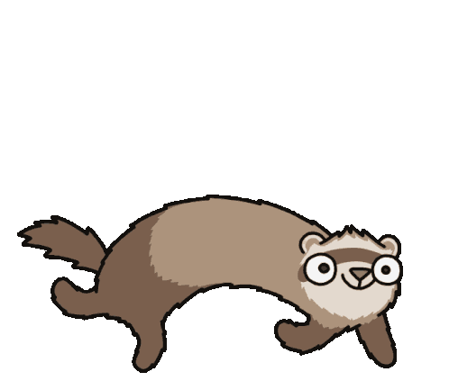
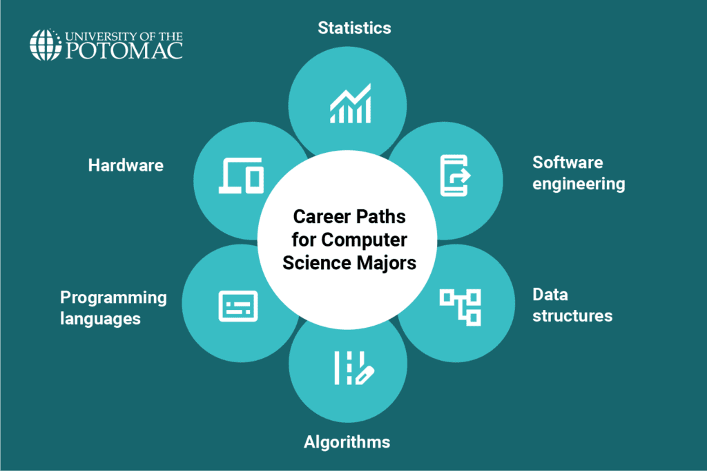

My name is Yangminxing Wu.
Feel free to call me Zack!
Background

I moved to the United States when I was in second grade, which was a big change for me at a young age. At first, everything felt new and a little confusing, especially learning a different language and getting used to a new school system. Over time, I slowly adjusted by making friends and becoming more comfortable with my surroundings. Those early experiences helped me become more independent and adaptable. Moving to a new country also taught me how to face challenges and keep trying even when things feel difficult. Because of this background, I have learned to appreciate both my culture and the opportunities around me.
My Hobbies

In my free time, I enjoy both sports and video games. One of my favorite sports is volleyball because it requires teamwork, quick thinking, and communication with others. Playing volleyball helps me stay active and also allows me to spend time with friends. I also enjoy playing video games because they are fun and sometimes challenge me to think strategically and solve problems. Some games even inspire my interest in technology and how games are created. Whether I am playing sports outside or games online, these hobbies help me relax and enjoy my time after school.
Future Goals

In the future, I hope to study either computer science or business in college. I am interested in computer science because I enjoy working with technology and learning how software and systems are built. At the same time, business interests me because it teaches how ideas can turn into real companies or projects. I believe that combining these two fields could open many opportunities in the future. For example, I might want to start a tech company or create new digital products. No matter which path I choose, my goal is to keep learning and build something meaningful that can help others.